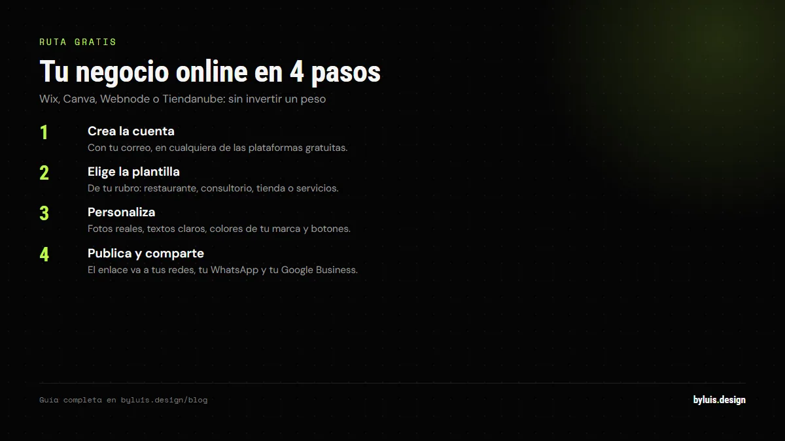
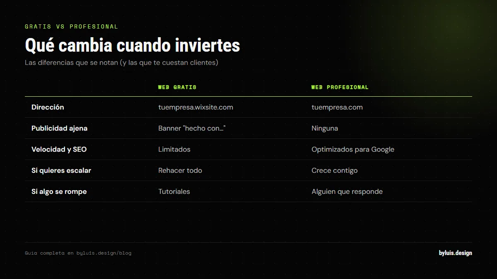
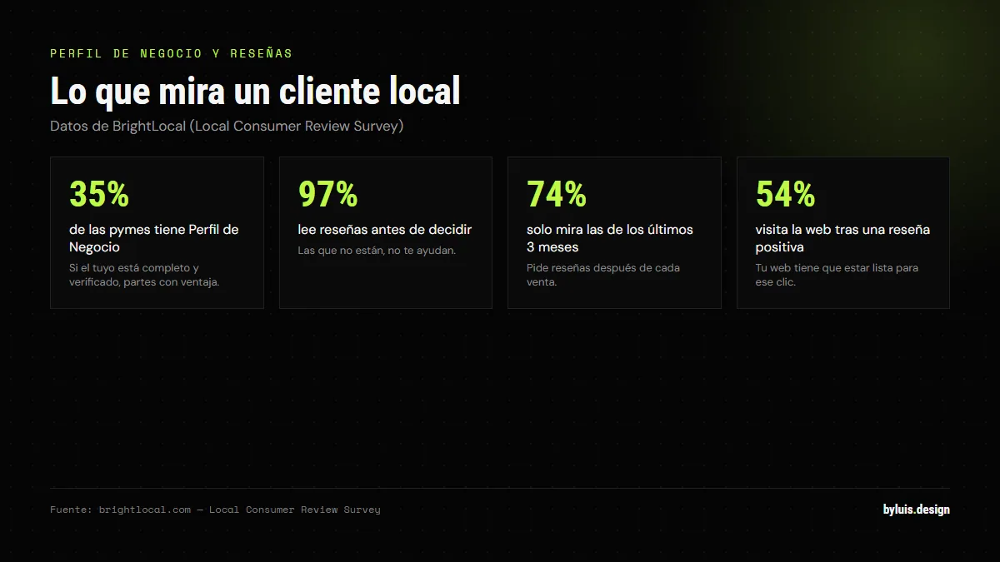

Si tienes un negocio en Colombia y todavía no apareces en Google, te estás perdiendo de los clientes que ya te están buscando. La buena noticia: hoy puedes crear una web gratis en minutos. La mala: gratis tiene un precio que se paga después. En esta guía te explico las dos rutas y cuál conviene según tu caso.
Respuesta corta: puedes crear la web de tu negocio gratis con Wix, Canva, Webnode o Tiendanube (solo correo y contraseña), pero tendrás dominio con la marca de la plataforma, publicidad y SEO limitado. Con hosting y dominio propios arrancas desde $100.000 al año, y con un profesional desde $1.000.000.
La ruta gratis: en 4 pasos y sin invertir un peso
Plataformas como Wix, Canva, Webnode y Tiendanube permiten crear una página web gratis solo con tu mail y contraseña — una presencia online profesional sin inversión inicial. El proceso es siempre el mismo:

- Crea la cuenta en la plataforma (Wix, Canva, Webnode o Tiendanube) con tu correo.
- Elige una plantilla de tu rubro (restaurante, consultorio, tienda, servicios).
- Personaliza: fotos reales de tu negocio, textos claros, colores de tu marca y botones.
- Publica y comparte el enlace en tus redes y WhatsApp.
Tiendanube destaca para quienes quieren vender: ofrece un ecosistema completo en su plan gratuito, incluyendo días de prueba gratis en sus planes de pago. Para servicios, Wix y Canva son los más usados por su facilidad.
Lo que NO te dicen de la web gratis
Las opciones gratuitas tienen limitaciones en funcionalidades, dominio y publicidad. Esto es lo que realmente obtienes:

- Dominio con la marca de la plataforma: tu web será tuempresa.wixsite.com en vez de tuempresa.com. Se ve poco profesional y se olvida fácil.
- Publicidad de la plataforma: muchas muestran anuncios o un banner "hecho con...".
- Velocidad y SEO limitados: Google penaliza webs lentas; los constructores gratuitos no están optimizados para posicionar.
- Difícil de escalar: cambiar de plataforma después significa rehacer todo desde cero.
- Sin soporte real: si algo se rompe, te quedas solo con tutoriales.
La ruta con hosting y dominio propios
Si quieres que tu web sea profesional desde el día uno, necesitas tres piezas:
- Dominio: el nombre de tu web (ej. tumarca.com o .com.co). Cuesta entre $30.000 y $60.000 al año.
- Hosting: donde se aloja tu página. Desde $27.000/mes en Colombia, con velocidad alta, buen soporte y alta disponibilidad.
- Diseño y contenido: con WordPress + plantilla (gratis si lo haces tú) o a medida con un profesional.
Con WordPress y una plantilla bien configurada puedes tener una web corporativa decente. El costo real: hosting + dominio, entre $100.000 y $400.000 al año. El esfuerzo: tu tiempo aprendiendo, actualizando y manteniéndola.
Y ojo con lo que se olvida: aparte del dominio y el hosting, el mantenimiento en Colombia arranca en $60.000-$100.000 al mes (GoDaddy). El SSL y el dominio del primer año suelen venir incluidos.
La estructura mínima que toda web de negocio necesita
No necesitas muchas páginas: necesitas las correctas. Esta es la estructura que funciona (la misma que uso con mis clientes):
- Inicio: qué haces, para quién y por qué eres la mejor opción. En 5 segundos.
- Servicios o productos: con precios claros si es posible. La gente decide con información.
- Sobre nosotros: quién está detrás, tu historia, tu cara. Genera confianza.
- Contacto: formulario, WhatsApp visible y ubicación. Un botón de WhatsApp siempre a la vista.
¿Gratis o profesional? La decisión según tu caso
| Tu situación | Te conviene | Por qué |
|---|---|---|
| Estás probando una idea | Gratis (Wix/Canva) | Valida si el negocio funciona antes de invertir. |
| Negocio establecido, poco presupuesto | WordPress + plantilla | Dominio propio y control total por poco dinero. |
| El sitio es la cara de tu negocio | Profesional | Diseño a medida, SEO, velocidad y soporte real. |
| Vendes online | Tiendanube o e-commerce a medida | Pagos, envíos y catálogo funcionando end to end. |
Qué necesita tu negocio para aparecer en Google (además de la web)
Tener la web no te pone en Google. Para un negocio local el atajo es el Perfil de Negocio de Google (el antiguo Google My Business), gratis. Para salir en la Búsqueda y en Maps tienes que agregar o reclamar tu empresa y verificarla:

- Crea o reclama el perfil en business.google.com con la cuenta del negocio, no con tu cuenta personal.
- Elige la categoría más específica. "Panadería de bodas" compite mejor que "Panadería".
- Completa todo: dirección o área de servicio, horarios, teléfono, enlace a tu web y fotos reales.
- Verifícalo por postal, llamada o video. Sin verificar no puedes responder reseñas ni publicar novedades.
El dato que convence: solo el 35% de las pymes tiene Perfil de Negocio de Google, según BrightLocal. Si el tuyo queda completo y verificado, partes con ventaja.
Después vienen las reseñas. El 97% de los consumidores las lee antes de decidir y al 74% solo le pesan las de los últimos tres meses. El 54% revisa la web del negocio justo después de leer una reseña positiva, así que un perfil con reseñas buenas te manda tráfico. Pídelas después de cada venta con el enlace del perfil y sin ofrecer nada a cambio porque Google lo prohíbe.
Los errores que hacen que una web no traiga clientes
La web está publicada, pero el WhatsApp no suena. Casi siempre es por uno de estos:
- Carga lenta. Google mide tres cosas: que el contenido principal se vea en 2,5 segundos, que la web responda en 200 ms y que nada se mueva mientras carga. Una foto de 3 MB sin comprimir tumba las tres.
- No aparece en Google. Sin Perfil de Negocio, sin Search Console y sin sitemap, eres invisible para quien busca desde el celular a dos cuadras.
- Contacto difícil. Si el botón de WhatsApp no se ve o el número quedó mal escrito, el interesado se va a la competencia.
- No está pensada para el celular. Ábrela en tu teléfono: si hay que hacer zoom o los botones no se tocan, se van tus visitas.
- No dice qué haces. Los primeros cinco segundos deben responder qué vendes, a quién y cómo te contactan.
Checklist antes de publicar y qué medir el primer mes
Antes de dar la web por lista, revisa esto. Toma media hora y te ahorra meses de problemas:
- Ábrela en tu celular, no en el computador. Ahí llega casi todo el tráfico.
- Mide la velocidad en PageSpeed Insights (gratis, de Google) y deja las métricas en verde.
- Envía el formulario de contacto y escríbete por el botón de WhatsApp para confirmar que ambos llegan.
- Asegúrate de que cada página tenga un solo H1 y un título claro.
- Confirma el candado (HTTPS) y que el dominio sin www redirija bien.
- Instala Search Console y Analytics, y envía el sitemap.
- Revisa que no queden enlaces rotos ni datos de contacto viejos.
El primer mes no mires solo las visitas. En Search Console revisa cuántas veces apareces (impresiones), cuántos clics recibes y con qué búsquedas. En Analytics, cuántos contactos reales entran por WhatsApp o formulario. 200 visitas con cero contactos dicen más que 2.000 sin preguntas. Y no saques conclusiones con tres días de datos: dale 28.
Preguntas frecuentes
¿Cuánto se demora crear una web gratis?
Con Wix, Canva o Webnode puedes tener tu página publicada en 1-2 horas si tienes las fotos y textos listos. La plantilla hace el 80% del trabajo.
¿Necesito saber programar?
No. Los constructores (Wix, Canva, Webnode, Tiendanube) funcionan con arrastrar y soltar. Para WordPress necesitas más paciencia pero tampoco código. Si quieres diseño a medida, ahí sí entra un profesional.
¿Mi web gratis aparece en Google?
Sí, pero con límites: dominio subdominio, poca velocidad y SEO limitado hacen que cueste mucho posicionar. Si Google es tu canal de clientes, la inversión en hosting propio o profesional se paga sola.
¿Qué hago primero: web o redes sociales?
Ambas, pero con lógica: las redes te prestan alcance; la web es tuya. Una estrategia que funciona: web como base (con WhatsApp y formulario) + redes para llevar tráfico a la web.
¿Cuánto cuesta mantener la web cada año?
Súmalo: dominio, hosting y mantenimiento. El SSL y el dominio del primer año suelen venir incluidos con el hosting. El mantenimiento preventivo en Colombia arranca en $60.000-$100.000 al mes, unos $720.000-$1.200.000 al año, según GoDaddy. Si no quieres pagarlo, prepara tiempo tuyo para actualizar y respaldar.
¿Necesito el Perfil de Negocio de Google si ya tengo web?
Sí, y es gratis. El perfil te pone en Google Maps y en los resultados locales; la web es a donde llevas a la gente. Solo el 35% de las pymes lo tiene, así que completarlo te diferencia rápido. Empieza en business.google.com.
¿Cuántas reseñas necesito para que me elijan?
No hay un número mágico. Hoy pesa la recencia y la nota: el 74% solo valora reseñas de los últimos tres meses y el 31% solo contrata negocios con 4,5 estrellas o más. Mejor 10 recientes que 50 viejas. Y respóndelas, buenas y malas.
¿En cuánto tiempo empiezo a ver clientes desde Google?
No prometo plazos. Al principio verás impresiones antes que clics, y clics antes que contactos. Si no apareces ni en impresiones, Google no te conoce: falta Perfil de Negocio, sitemap o contenido. Si apareces y no te hacen clic, revisa tu título y tu descripción.
Sigue leyendo
Fuentes: web.dev (umbrales de Core Web Vitals), brightlocal.com (uso de reseñas y Perfil de Negocio), support.google.com/business (crear y verificar el Perfil de Negocio) y godaddy.com (costos de hosting y mantenimiento en Colombia).
Te lo hago yo, con dominio propio y listo en semanas
Te asesoro sin compromiso: te digo si tu idea necesita web gratis, WordPress o algo a medida, y cuánto costaría exactamente.